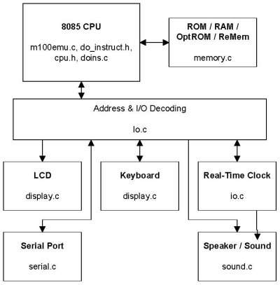

This chapter describes the basics of the VirtualT hardware emulation. It provides a block diagram of the various components of the Model T and details the source files used to implement those blocks.
The Model T is a relatively simple computer consisting of an 8085 CMOS CPU, ROM, RAM, LCD Module, Keyboard and a handful of peripherials. A block diagram of the Model T is shown in the figure below. VirtualT emulates the hardware by splitting each of these blocks into various source files and performing 8085 CPU instruction intrepretation, calling routines in the appropriate source file to perform the required actions.

The CPU emulation is performed in the main program file 'm100emu.c' with the help of include files 'cpu.h' and 'do_instruct.h'. The "cpu" consists of an array of bytes representing the cpu registers that are read and updated based on the 8085 instruction set. The 'do_instruct.h' file contains the implementation of the instruction set while 'cpu.h' defines the entries for the various registers (A, B, C, flags, etc.) and the bit patterns for flags. During emulation program control will be directed to routines in the other files for processing memory fetches, and I/O operations. I/O operations will be further directed to the appropriate routines for peripheral device control functionality. Additionally, the main emulation routine ("emulate") checks for debug operations between execution of each instruction. This is the integrated debugger functionality.
The RAM, ROM, and ReMem emulation functions are located in the file 'memory.c'. This file provides functions for reading and writing data that is within the CPU's address space in addition to functions for directly accessing specified regions (ReMem RAM / Flash, etc.) so the VirtualT tools have a common access method. It also contains routines for reading ROM and RAM files from the host and for writing RAM files prior to program termination.
During Base Memory emulation, the routines access a 64K byte array and copy ROM / OptROM data to that array. All CPU memory accesses are directed to the static 64K array. During ReMem emulation, the routines allocate three 2Meg regions to represent the RAM chip and two Flash chips. An array of 64 pointers is used to point to a 1K byte region from the appropriate RAM or Flash memory as dictated by the ReMem mapping rules. All CPU accesses are performed by selecting the appropriate base pointer from the array of 64 and then reading / writing using an offset from that pointer.
All I/O operations are handled in the file 'io.c'. The I/O operations are performed with C switch statements to determine the I/O address, and the appropriate actions are performed. The operation of some the I/O ports varies from model to model, and some of the ports control more than one function. The routines in 'io.c' save port values and check the emulation model as needed to direct operations to the correct routines.
The LCD emulation is performed in the file 'display.cpp' and uses the FLTK libraries to perform graphics operations. To emulate the LCD, VirtualT uses a C++ class called T100_Disp derived from the FLTK Fl_Window class. A second class named T200_Disp is further derived from the T100_Disp class to provide Model 200 emulation functionality. Based on the model being emulated, a window will will be created using one of these two classes and will serve as the main VirtualT window for program exeution.
The T100_Disp class emulates the LCD and keyboard for the M100, M102, M10 and PC-8201 models. It encapuslates all LCD controller memory and functionality, active and static drawing routines, and keyboard translation functions. To interface the C++ object with the "C" based emulation, 'display.cpp' defines a global variable to represent the display and exports C function calls for processing I/O operations directed to the display. The exported C functions then send the I/O operations to the global display object. The Model 100 LCD module consists of 10 controller chips, each driving a portion of the 240x64 pixel display. The T100_Disp class exactly emulates this functionality. It monitors input and output operations to determine which controller(s) is being addressed and maintains controller status accordingly. All registers on the Model 100 LCD module are implmented by T100_Disp. The keyboard translation includes only translation from OS / modern keyboard keystrokes into defined constants to be used during the mapping stage in 'io.c'. The class does not perform model specific key mapping.
The T200_Disp class derives from the T100_Disp class to inherit the keyboard and menu and static drawing operations. The active draw functionality is modified to emulate the Model 200's single LCD controller with 8K display RAM. The emulation includes processing of all controller functions except the character generator ROM.
The keyboard functionality is split into three operations: keyboard translation, and keyboard mapping and I/O processing. The keyboard translation function is managed by the T100_Disp LCD control class. It converts all host keyboard keystrokes into constants used during mapping. It also performs a minor mapping function for CODE, GRAPH, LABEL, PRINT, PAUSE, and PASTE keys.
The mapping operation is performed in the 'io.c' file when there is a change in the keystate of any host key. It creates row scan values for each scan column based on the current keystates and the specific mapping for the model. It also controls the timing of mapped values based on the operating system's keyboard scan state. The I/O portion of the keyboard operation monitors the keyscan columns and returns the correct mapped row value.
The Real-Time Clock (RTC) device is emulated in the 'clock.cpp' file. The Model 200 uses a different clock chip than the other models, however VirtualT emulates only a single clock device and presents different interfaces to that emulation based on the model selected. For the Model 200, the alarm feature is not supported. Starting with, version 1.3, the real-time clock chip emulation allows setting the emulated time and is no longer "slaved" to the host's system time. An options tab as been added to the "Peripheral Setup" window to configure the clock options. The emulated clock can be configured to initialize from the host's system clock or from a previously saved emulation session.
The serial port emulation is implemented in 'serial.c' with help from the I/O routines in 'io.c'. The serial port routines present an API for opening serial ports, setting baud rate and stop bit, and reading / writing data to the serial device. The I/O routines monitor access to the serial chip registers and map the outputs into serial port API commands. The T200 uses a different serial I/O chip than the other models, so the register mapping is different. Regardless of the model, the serial API routines present a constant interface and manage all host device access.
The sound emulation feature is not operational, however the routines have been partially written and integrated into the I/O manager in 'io.c'. The sound emulation is located in 'sound.c' and relies on the host sound system to produce simple tones for the BEEP and SOUND commands. To accomplish this, the I/O manager monitors the clock output of the Real-Time Clock chip and the output port for 'clicking' the speaker. It calculates the output frequency based on either the RTC register values or the number of CPU cycles beteween successive speaker toggle 'clicks'. It then calls the sound routines to generate a tone of the desired frequency.